Весь пульт помещается на экране без прокрутки. Quick Edit открывает drawer поверх корпуса. На коротком телефоне нижний ряд компактнее; в горизонтальном положении — две колонки. Число скорости можно редактировать: введите 0.50–1.50 и нажмите Enter. Круглые ручки — жест вверх/вниз; ролики — влево/вправо. На клавиатуре стрелки меняют скорость на 0.01.
Groove
Барабанный счётчик · pitch-фейдер
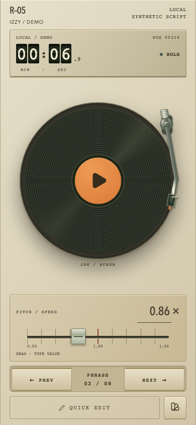
Механические разряды и металлический фейдер. Тонарм сохранён.
Clear
Точечные цифры · световая дорожка
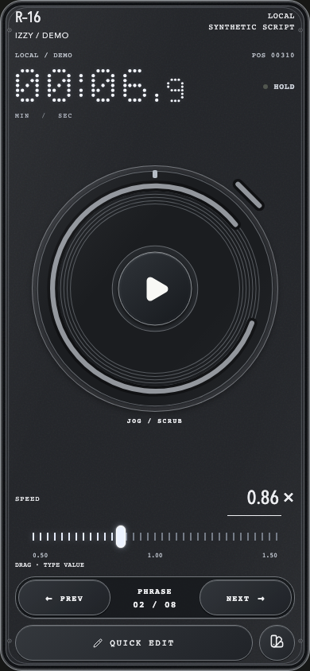
Время под стеклом и светящийся маркер. Принятые световоды на Play сохранены.
Arcade
Пиксельный HUD · шаровой фейдер
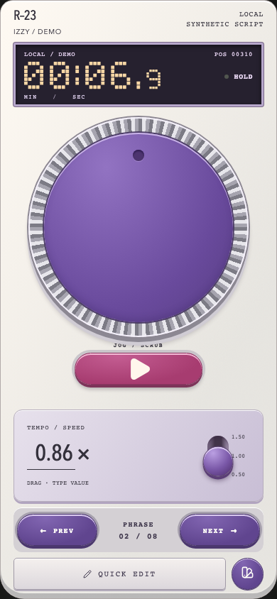
Квадратные пиксели и вертикальная рукоять. Нижнее положение — 0.50×, верхнее — 1.50×.
Field Reel
Сегментный LCD · металлический ролик
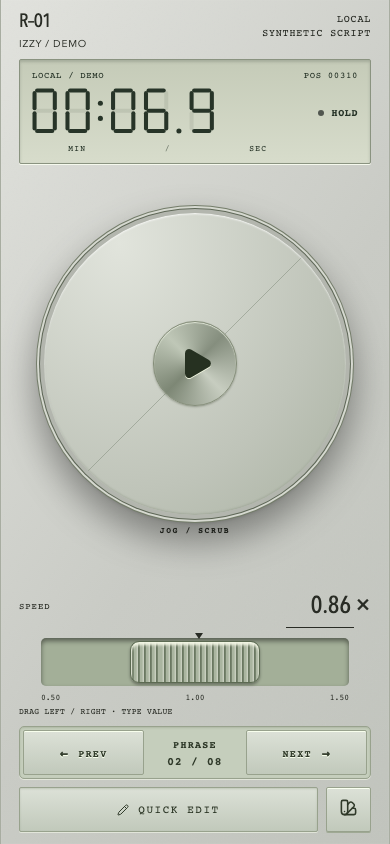
Матовый приборный экран и ребристый ролик: движение влево/вправо меняет скорость.
Signal
Янтарный индикатор · рычаг
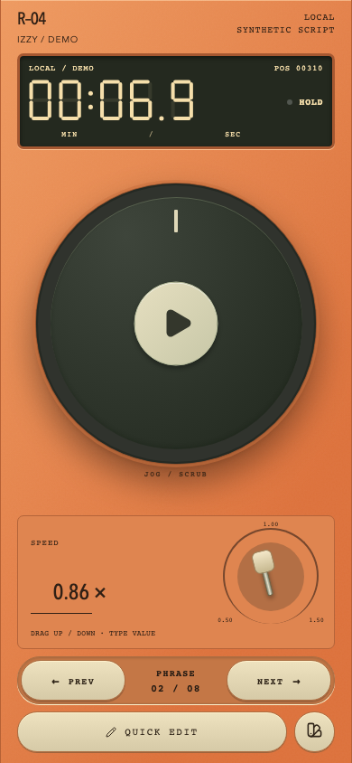
Сегментные цифры и короткий рычаг с дуговой шкалой. Круглая Play сохранена.
Vector
Фосфорные цифры · радарная ручка
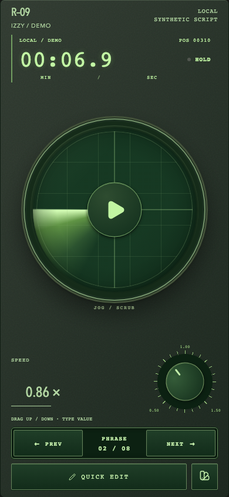
Открытое зелёное время и крупная ручка с индексом. Жест вверх/вниз.
Cartridge
Пиксельный экран · ребристый ползунок
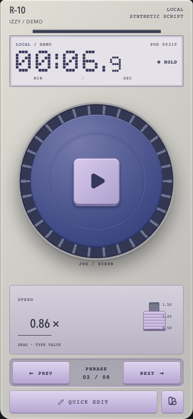
Утопленный слот над дисплеем и ступенчатая ABS-рукоять поддерживают тему консоли.
Switchboard
Карточка счётчика · бакелитовый ролик
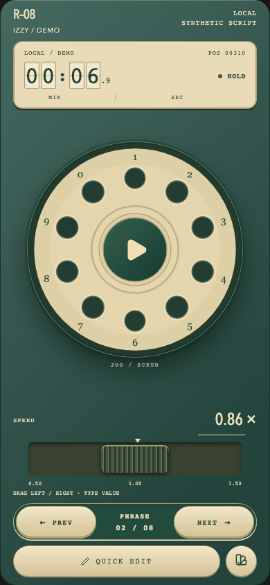
Неподвижные телефонные цифры вокруг отверстий. Кремовые разряды и тёмный ролик.
Correspondent
Видоискатель · рифлёная ручка
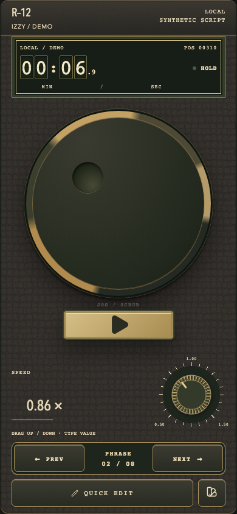
Угловые рамки видоискателя, латунный воротник и ручка со шкалой.
Foundry
Латунный счётчик · винтовая каретка
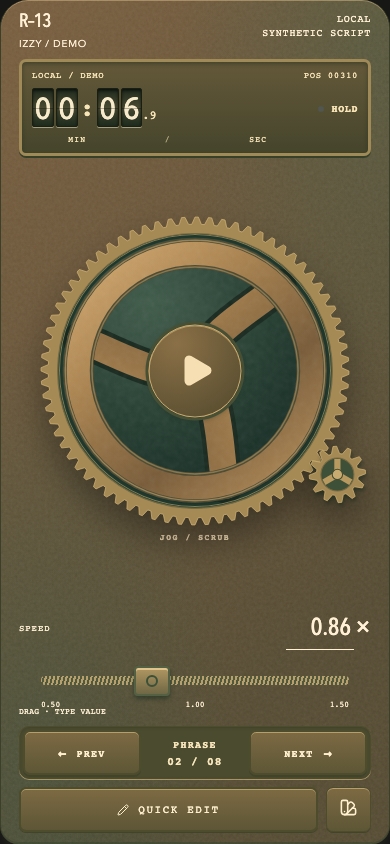
Механические разряды в оправе и каретка на резьбовом валу.
Observatory
Два циферблата · микрометр
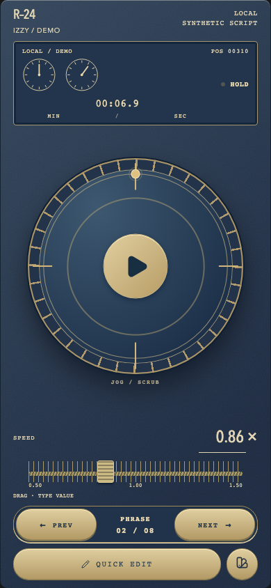
Минуты и секунды на отдельных циферблатах с точным числом рядом. Спутник движется по круглой орбите.
Orbit
Открытая типографика · керамическая ручка
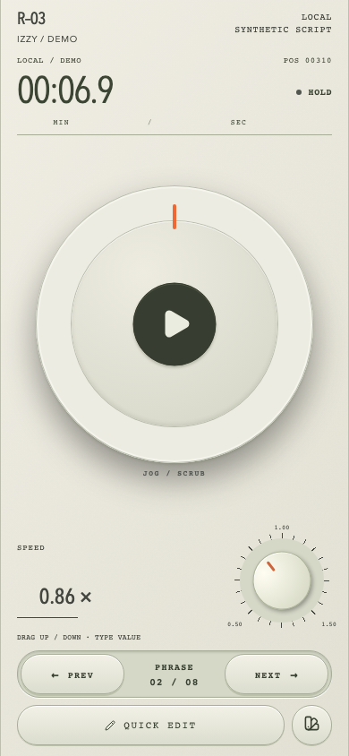
Спокойное время без отдельного экрана и светлая ручка с оранжевым индексом.
Thumbprint
Вертикальное время · вогнутый ползунок
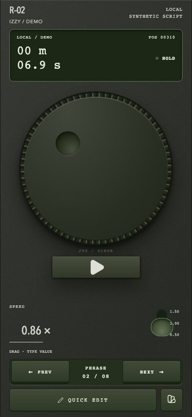
Минуты над секундами; тёмная вогнутая рукоять рассчитана на движение большим пальцем.
Original
Открытая типографика · простая направляющая
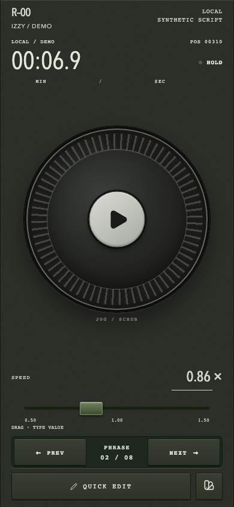
Базовый инструмент: лёгкие цифры и чёткая линейная шкала.